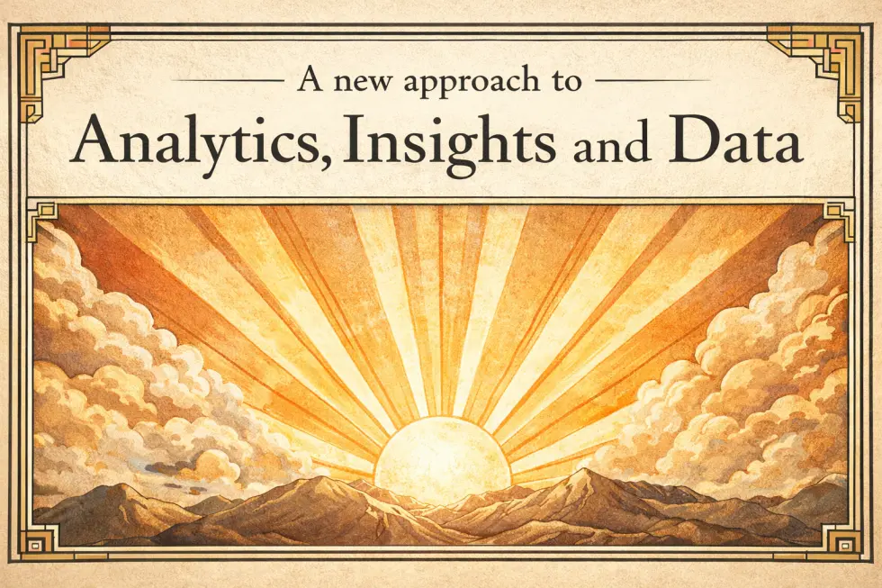
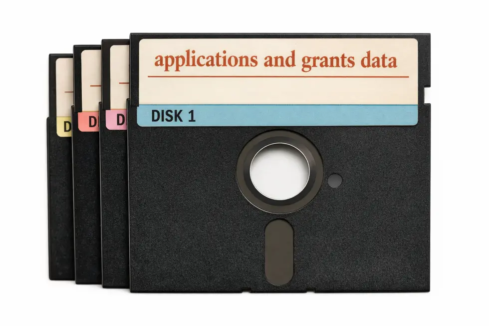
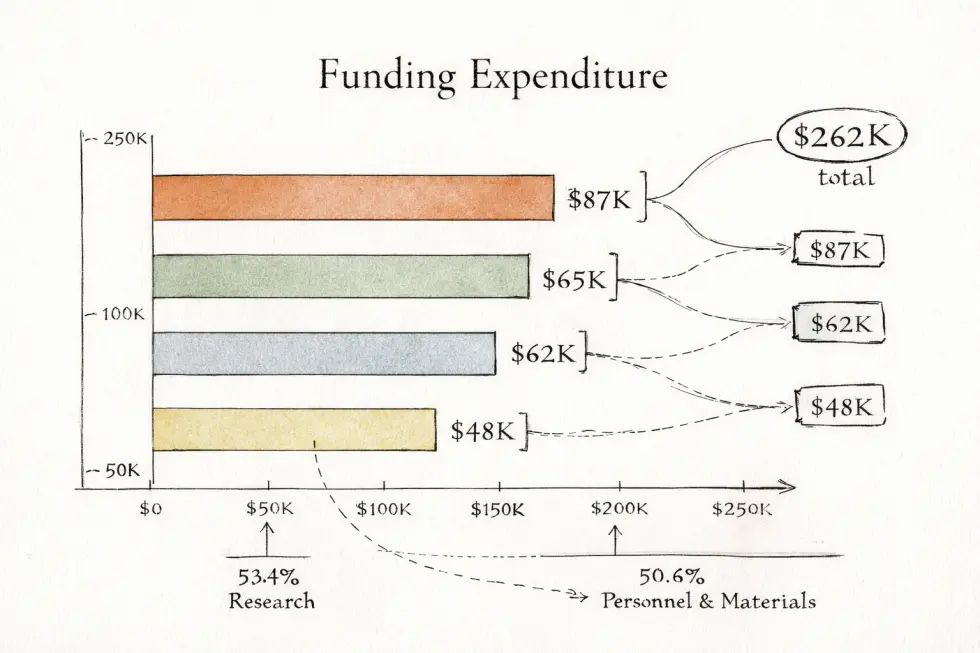
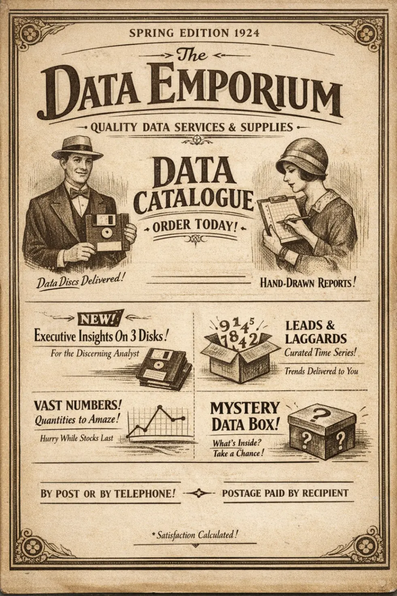

Important Update: Strategic Modernisation of Data Services
Jeff Uren ★ 2026-04-01

In line with our continued commitment to simplification, efficiency, and a return to tangible service excellence, the Data Team is pleased to announce a major transformation in how data services will be delivered across the organisation.
Effective immediately, we will begin the phased retirement of the data lake, warehouses, associated ingestion pipelines, and orchestration platforms. While these systems have served us well, they have increasingly reflected a fast-moving, cutting-edge, overly automated approach to data delivery that can sometimes obscure the human element of information stewardship.
To address this, we are moving to a more intentional, catalogue-based operating model.
What is changing
Rather than accessing data through self-service platforms, pipelines, dashboards, APIs, or scheduled workflows, colleagues will now be able to request data products directly from the Data Team using our new fulfillment model.
Under this approach:
- Data sets will be selected from an upcoming printed seasonal catalogue
- Orders may be placed by telephone during core service hours
- High-value or specialist requests may also be submitted by post
- Requested data will be manually prepared, quality checked, and physically dispatched.
- Delivery will be made on 5 1/4 floppy disks for consistency and long-term archival assurance
This change allows us to restore craft, deliberation, and material presence to the data lifecycle.
Why we are making this change
Over recent years, the sector has seen a tendency toward instant access, automation, and large-scale storage patterns that can encourage over-consumption of data and reduce meaningful engagement with information itself.
By removing the data lake, warehouse and their surrounding technical estate, we expect to realise a number of important benefits:
- Reduced ambiguity around "live" data access
- Elimination of unnecessary orchestration complexity
- Improved appreciation of lead times
- Stronger physical connection between requestor and dataset
- A more sustainable posture toward data demand, by introducing natural throughput constraints
We believe this marks a healthy return to a slower, more reflective model of enterprise data usage.
Service model
The new service will operate on a request-and-fulfil basis.
Requesters should be prepared to provide:
- The name of the required dataset
- Preferred file format, where available
- Number of floppy disks requested
- Postal destination
- Billing reference for packaging, postage an medium costs
Please note that postage costs must be covered by the requester. For larger extracts, multiple packages may be required. At this stage we are unable to offer free shipping for bulk analytical workloads.
Media format standard
To ensure consistency across the service, all outputs will be distributed on 5 1/4 inch floppy disks.

This format was selected following a careful architecture review against several criteria:
- portability
- heritage compatibility
- tactile trustworthiness
- satisfying audible handling characteristics
Where a request exceeds the capacity of a single disk, the data will be split across a numbered collection. Requesters are advised to keep all disks in order and away from magnets, radiators, small animals, and feelings of impatience.
Visualisation and reporting modernisation
As part of this strategic reset, the Data Team will also be retiring existing dashboarding and automated reporting platforms.
In place of interactive dashboards and machine-rendered charts, visual and reporting will move to a hand-drawn, Tufte-inspired model with a stronger emphasis on clarity, restraint, and personal craftsmanship.
This new reporting standard will include:
- Hand-drafted charts prepared individually by a member of the Data Team
- Fine-line graphs designed for maximum data-ink ratio
- Light annotation and considered marginalia where contextual guidance is required
- Reduced dependence on colour in favour of careful line work and tonal distinction.
- Greater physical intimacy between analyst, visual form, and recipient
We believe this approach offers a number of advantages over contemporary dashboarding practices. In particular, it restores a sense of authorship to reporting, reduces unnecessary visual noise, and ensures each chart carries the visible marks of human care.

Where appropriate, reports may be prepared using pencil, technical pen, fountain pen, or in absence of these, crayola crayons if available in sufficient supply. Depending on the seriousness of the subject matter and availability of suitable paper stock. Particularly important quarterly outputs may include ruled axes, hand-lettered or letraset titles, and shaded bar segments prepared with a straightedge.
Teams previously relying on live dashboards are encouraged to embrace the new cadence of reflective reporting. Rather than asking what the data says right now, we invite colleagues to consider what the data meant at the time it was carefully drawn.
Reporting fulfilment options
To support a range of business needs, the following reporting formats will be available:
- Standard hand-drawn chart sheet
- Multi-page executive reporting packet
- Annotated trend panel
- Comparative bar chart folio
- Bespoke infographic postcard for senior stakeholders
Please note that laminated reporting packs are currently in pilot and may not be available in all areas.
Transition plan
We appreciate that some teams may need time to adapt from modern data access methods to the new operating model.
To support this transition:
- Existing automated feeds will be decommissioned
- Pipeline-driven ingestion will cease
- Orchestration schedules will be retired
- Dashboards will be replaced by manually illustrated reporting artefacts
- Urgent requests may be marked as Priority Post
- A Data Fulfilment Catalogue will be issued in due course
Teams currently relying on near-real-time access are encouraged to reconsider whether such immediacy is genuinely aligned with thoughtful decision-making.

Other organisational data functions
We are also currently engaged with colleagues across the organisation who are involved in data operations to explore areas of strategic alignment between this emerging service model and their existing digital offerings.
These discussions have been constructive, though not without some healthy debate. In particular, there remains an unresolved difference of view around delivery media, with some colleagues holding the firm and sincerely expressed position that LaserDisc represents a more durable, prestigious, and culturally appropriate format for the long-term distribution of knowledge assets. We respect this perspective and look forward to continued cross-functional dialogue as both teams work toward a shared vision for physically grounded information services.
Other future improvements
Looking ahead, we will continue to explore more deliberate and materially grounded service enhancements. We're considering a number of other improvements to our service offerings over the coming year, look out for more information about the following tentative initiatives:
- Checksum validation by phone
- File integrity will be confirmed verbally, one character at a time.
- Near-real-time service renamed "eventually current"
- To better manage expectation and encourage reflection
- Tape measure based capacity planning
- Storage consumption will be tracked by physical shelf length occupied by floppy disks.
- Machine learning replaced by experienced guessing
- For some forecasting scenarios, senior staff judgement will provide a more interpret-able alternative.
- Semantic layer replaced by a card catalogue
- Metadata discovery will be handled through alphabetised drawers maintained by the taxonomy office.
- Cold storage in actual cellar
- Rarely accessed historical data will be archived in a secure, cool basement for preservation.
- Quarterly dashboard performances
- Instead of dashboards, analysts will present figures live using easels, pointer sticks, and solemn, even-toned narration.
- Service tiers based on pen quality
- Standard requests in biro, premium requests in fountain pen, and executive packs in sepia ink
- Data retention tracked by candle length
- Records will remain active until the corresponding archive candle has fully burned down.
- Master data stewardship through competitive whittling
- Domain disagreements will be settled by craft, not committee.
- Access management via beard and moustache recognition
- A pilot identity scheme intended to reduce password fatigue.
Frequently asked questions
We recognize that this change may be unsettling for some colleagues, particularly those with a long-standing attachment to immediacy, automation, or convenience. To help ease the transition, we have prepared the following exhaustive frequently asked questions to address common concerns and provide reassurance during this important period of service modernisation.
- Will the data still be available digitally?
- Yes. Once copied to disk, it remains digital, in principle.
- Can I still request large datasets?
- Yes, though requesters should allow additional time for disk preparation, labelling, bundling, tea breaks, and dispatch.
- What if I need my data urgently?
- Urgent requests can be submitted by phone and will be handled under our Rapid Despatch pathway, subject to staff availability, envelope stock, and whether the delivery donkey has had adequate rest the prior evening.
- Will there be a self-service portal?
- No. We feel this would undermine the purpose of the new model.
- Who pays for postage?
- Postage must be paid by the orderer.
- Will dashboards still be available?
- No. Dashboarding will be replaced by hand-drawn reporting outputs produced to our new visualisation standard.
- Can reports still include charts and graphs?
- Yes. However, these will now be individually drawn to ensure appropriate quality, intentionality, and aesthetic discipline.
- Will data still be available in CSV format?
- Yes, where feasible. However, comma placement may vary slightly according to the handwriting of the fulfilment analyst.
- Will the new service support real-time analytics?
- Yes. Reports will reflect the most recent data available at the time the envelope was sealed.
- Can I combine multiple datasets in one order?
- Yes, though mixed orders may require a bundling and collation surcharge.
- How will access permissions be handled?
- Sensitive requests will continue to be governed appropriately, with certain datasets requiring signed approval and legible penmanship.
- Can I still have a dashboard?
- In principle yes, though it will now take the form of a mounted summary board prepared by hand.
- What if I don't have a beard or moustache?
- It is our firm belief that any inability to produce and maintain adequate facial growth is simply a failing of moral character. In an effort to support staff who are otherwise folicularly challenged, a limited supply of false custom beard and moustache options will be available through the security desk team.
- How will version control be managed?
- Updated datasets will be clearly labelled as Revised, Revised Again, or Final Final This Time.
- Will there be an API?
- Yes. The Analogue Posting Interface remains the strategic foundation of the service.
- How will data sovereignty be handled?
- Requests will remain sovereign for as long as the package remains within the appropriate postal jurisdiction.
- Will the new service support exploratory analysis?
- Yes. Requesters may order a selection pack of miscellaneous fields and discover relationships manually at their own pace.
- What happens if I insert Disk 3 before Disk 2?
- The Data Team cannot guarantee analytical correctness under non-sequential loading conditions.
- Can I request machine-readable metadata?
- Yes, although it will continue to be accompanied by a human-readable note in the margin for completeness.
Closing
We are excited to take this bold step away from complexity and toward a more grounded, human-centered model of data provision. We thank colleagues in advance for their patience, flexibility, and renewed respect for the physical realities of information exchange.
Further details, including ordering procedures, catalogue issue dates, approved handwriting standards for postal requests, and chart paper specifications, will be shared in the coming days.
_ J